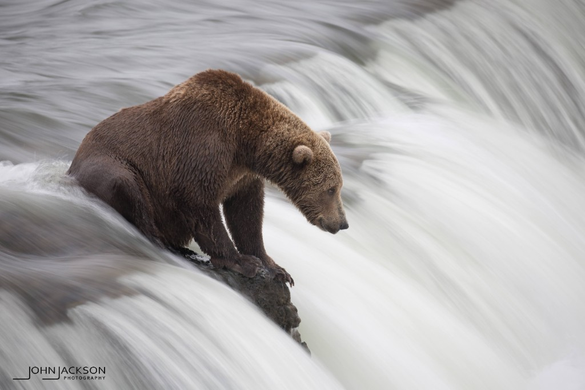

About us
Better than CJ, on purpose.
We're better than CJ. We make websites better than CJ, and we're into website building.
When we're not building, we're photographing grizzly bears in Alaska, hiking, canoeing, hammocking, reading, and running.
Hobbies
Outdoors, pages, and the in-between.
-
Grizzly photography
Taking photos of grizzly bears in Alaska.
-
Hiking
Trails, long walks, and whatever the map suggests next.
-
Canoeing
Quiet water and a boat you paddle yourself.
-
Hammocking
The sport of being horizontal between two trees.
-
Reading
Pages of the paper kind, not only the kind we ship.
-
Running
Miles on purpose, usually outside.
-
Website building
The hobby that also happens to be the whole point.
Fun fact
One of the newest web pages published.
Fresh off the press. Newer than it looks, and already one up on CJ.
GitHub
The page lives in the repo.
Source, history, and the newest version — all in one place.